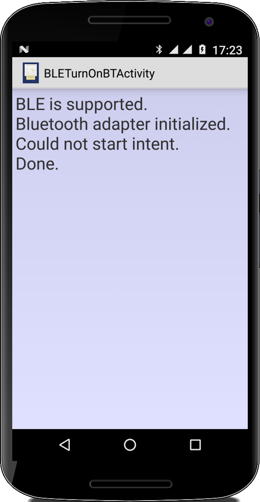

Networking
Was wäre ein Smartphone ohne eine Internetverbindung? Ziemlich langweilig wenn man nicht surfen, whatsappn oder online spielen könnte. Deswegen schreiben wir hier einen einfachen Browser, wir laden Webseiten herunter und auch ein eigener Server ist auf dem Programm. Mit einer kleinen Chatapplikation lernen wir auch wofür man TCP und UDP verwenden kann und was der Unterschied ist. JSON steht kurz auf dem Menu, und wir implementieren einen Wifi- und einen Netzwerkscanner. Dann verbringen wir noch ein bisschen Zeit mit Bluetooth. Als Schmankerl gibts dann unser TicTacToe als Netzwerkspiel und wir steuern unseren Computer mit dem Handy.
In diesem Kapitel wird es auch ziemlich threadig, soll heißen, dass fast jedes Programm mit Threads arbeitet. Es kann also nix schaden ab und zu mal im Kapitel fünf nachzusehen wenn was unklar ist. Sobald man Netzwerksachen macht, benötigt man viele Permissions. Will man sich es einfach machen, dann erlaubt man mal alles was irgendwo mal gebraucht werden könnte:
<uses-permission android:name="android.permission.INTERNET" /> <uses-permission android:name="android.permission.BLUETOOTH" /> <uses-permission android:name="android.permission.BLUETOOTH_ADMIN" /> <uses-permission android:name="android.permission.NFC" /> <uses-permission android:name="android.permission.ACCESS_WIFI_STATE" /> <uses-permission android:name="android.permission.CHANGE_WIFI_STATE" /> <uses-permission android:name="android.permission.WRITE_SETTINGS" />
Das ist natürlich nicht besonders nutzerfreundlich, aber wenn WhatsApp das kann, können wir das alle mal. Wir machen das ja nur aus didaktischen Gründen, WhatsApp aus wirtschaftlichen. Ach ja, für alle Beispiele in diesem Kapitel muss natürlich Wifi eingeschaltet sein.
.
 WebView
WebView
Als erstes wollen wir ein bisschen im Web browsen. Wie das mit einem Intent geht, haben wir bereits im ersten Kapitel gesehen. Hier wollen wir einen WebView verwenden. Dabei handelt es sich um einen View der HTML und CSS darstellen kann, und der auch bei Androids hauseigenem Browser verwendet wird. Neben einem EditText und Button Widget, fügen wir den WebView in unsere Layoutdatei ein:
<LinearLayout ... > ... <WebView android:id="@+id/webView" android:layout_width="match_parent" android:layout_height="match_parent" /> </LinearLayout>
Wenn wir nur möchten, dass der WebView eine Webseite lädt und anzeigt, dann genügen die Zeilen,
WebView webView = (WebView) findViewById(R.id.webView);
webView.loadUrl("http://www.google.com/");
Sobald der Nutzer aber auf irgendeinen Link klicken würde, dann würde Android den Default-Browser öffnen und dort den Link anzeigen. Um das zu verhindern, müssen wir die setWebViewClient() Methode des WebViews aufrufen und ihr einen WebViewClient übergeben:
public void onCreate(Bundle savedInstanceState) {
super.onCreate(savedInstanceState);
setContentView(R.layout.webview_activity);
final EditText et = (EditText) findViewById(R.id.editText);
final WebView webView = (WebView) findViewById(R.id.webView);
webView.setWebViewClient(new WebViewClient());
Button btn = (Button) findViewById(R.id.btn);
btn.setOnClickListener(new View.OnClickListener() {
@Override
public void onClick(View v) {
String sUri = et.getText().toString();
if (!sUri.startsWith("http://")) {
sUri = "http://" + sUri;
}
webView.loadUrl(sUri);
webView.requestFocus();
}
});
}
Im Unterschied zu dem Browserbeispiel aus dem ersten Kapitel, benötigt unser Beispiel noch die Erlaubnis ins Internet gehen zu dürfen. Das erledigen wir durch die folgende Zeile in unserer AndroidManifest Datei:
<uses-permission android:name="android.permission.INTERNET" />
Interessant ist vielleicht noch, dass wir die Klasse WebViewClient auch erweitern können, und dann das Verhalten unseres Browsers voll unter Kontrolle haben. Wie das geht haben wir im Projekt HelpPages im vierten Kapitel gesehen.
.
InetAddress
Wenn wir im Browser "www.google.com" eingeben, dann wissen wir, dass wir auf den Google Server wollen. Unser Smartphone kann aber erst mal mit der Domain "www.google.com" nicht viel anfangen [1]. Es braucht die IP Adresse. Dieses Umwandeln von Domain nach IP Adresse und umgekehrt macht in Java die InetAddress Klasse:
String networkInfo = "";
InetAddress localAdr = InetAddress.getLocalHost();
networkInfo += "Local IP: " + localAdr.getHostAddress();
InetAddress remoteAdr = InetAddress.getByName("www.google.com");
networkInfo += "\nGoogle IP: " + remoteAdr.getHostAddress();
InetAddress[] remoteAdrs = InetAddress.getAllByName("www.google.com");
for (int i = 0; i < remoteAdrs.length; i++) {
networkInfo += "\nGoogle IP" + i + ": " + remoteAdrs[i].getHostAddress();
}
Für einen Reverse-DNS-Lookup verwendet man die getHostName() Methode, die macht aus einer IP Adresse wieder einen Domainnamen. Braucht man eher selten.
Damit der obige Code ohne weiteres funktioniert, müssen wir zwei Dinge tun: zunächst müssen wir wieder die Erlaubnis haben ins Internet gehen zu dürfen, aber wir müssen zusätzlich noch eine ThreadPolicy setzen [2]:
StrictMode.ThreadPolicy policy =
new StrictMode.ThreadPolicy.Builder().permitAll().build();
StrictMode.setThreadPolicy(policy);
Tun wir das nicht, bekommen wir eine NetworkOnMainThreadException. Aus irgendeinem Grund hat es Android nicht so gerne, dass wir aus dem Main Thread heraus auf's Netzwerk zugreifen. Natürlich kann man jetzt immer einen Extra-Thread für's Netzwerk starten. Unsere Beispiele würden dadurch aber so unübersichtlich und unlesbar, dass wir aus didaktischen Gründen darauf verzichten werden. Deswegen müssen wir in all unseren Programmen immer diese zwei Zeilen am Anfang der onCreate() einfügen.
.
URL
Sehr häufig wollen wir nur eine simple HTML Seite runterladen. Dafür verwendet man die URL Klasse. Die URL Klasse erlaubt es uns eine HTTP-Verbindung (connection) zu einem Webserver herzustellen, und die liefert uns einen InputStream:
public static String getWebpage(String address) {
try {
URL url = new URL(address);
HttpURLConnection con = (HttpURLConnection) url.openConnection();
InputStream is = con.getInputStream();
BufferedReader br = new BufferedReader(new InputStreamReader(is, "UTF-8"));
String content = "";
while (true) {
String line = br.readLine();
if (line == null)
break;
content += line;
}
br.close();
con.disconnect();
return content;
} catch (Exception e) {
e.printStackTrace();
}
return null;
}
Dieser InputStream ist der gleiche wie wir ihn vom Lesen von Dateien her kennen, dort ist es ein FileInputStream. Deswegen ist der Rest des Codes auch identisch mit dem aus der EditorActivity im fünften Kapitel. Verwenden können wir unsere Methode dann ganz einfach:
String html = getWebpage("http://www.lano.de"));
Mit der URL Klasse kann man noch viel mehr machen als einfach nur Dateien runterzuladen, aber für den Anfang soll das genügen.
.
.
Socket
Die URL Klasse baut eine TCP Verbindung auf, läd die gewünschte Seite von einem Server, und schließt die Verbindung wieder. Wenn wir nur eine Seite laden wollen dann genügt das auch. Manchmal möchte man aber mehr als eine Seite laden, oder man möchte die Verbindung offen halten. Dann benötigen wir einen Socket, genauer eine TCP Socket [3].
Die Socket Klasse ist relativ einfach zu verwenden: man gibt ihr eine IP Adresse und einen Port [4]. Dann sagt man ihr, dass sie sich verbinden soll:
SocketAddress sockaddr = new InetSocketAddress("www.google.com", 80);
Socket socket = new Socket();
socket.connect(sockaddr, TIMEOUT);
Log.i("SocketActivity", ""+socket.getLocalAddress());
Log.i("SocketActivity", ""+socket.getRemoteSocketAddress());
Wenn es einen interessiert, kann man mit getLocalAddress() die eigene Adresse erfahren und mit getRemoteSocketAddress() die Adresse des Servers.
Steht unsere TCP Verbindung, können wir mit dem Server reden. Wir müssen natürlich die Sprache des Servers sprechen. Der Google Server spricht HTTP [5], und deswegen schreiben wir in den OutputStream:
OutputStream os = socket.getOutputStream();
os.write("GET / \r\n".getBytes());
os.flush();
Das "GET / \r\n" sagt soviel wie "Gib mir doch Deine Einstiegsseite". Die flush() Methode schickt die Daten schon mal los, sonst würde der Socket nämlich warten, ob wir noch mehr zu sagen haben.
Jetzt antwortet uns der Server, deswegen müssen wir zuhören, und das machen wir mit dem InputStream, den wir vom Socket bekommen:
InputStream is = socket.getInputStream();
while (true) {
int len = is.read();
if (len == -1)
break;
tv.append(""+(char) len);
}
Wir lesen vom Socket solange bis nichts mehr kommt. Wir könnten jetzt noch eine zweite Anfrage schicken, und so weiter.
Wenn wir dann fertig sind, müssen wir alle Türen wieder zu machen, und derer sind drei:
os.close(); is.close(); socket.close();
Und das wars. Natürlich muss man um den ganzen Code einen dicken try-catch Block schreiben, weil da kann ja alles mögliche schief laufen.
.
TimeServer
Nach dem Client Socket wollen wir uns jetzt den Server Socket ansehen, der ist auch nicht viel schwieriger. Wir wollen einen kleinen Server schreiben, der aktuelles Datum und Uhrzeit ausgibt. Dazu benötigen wir erst einmal einen ServerSocket:
ServerSocket server = new ServerSocket(3737);
while (true) {
Socket socket = server.accept();
OutputStream os = socket.getOutputStream();
String daytime = new Date().toString();
os.write(daytime.getBytes());
os.close();
socket.close();
}
Der hört auf einem bestimmten Port, in unserem Fall 3737. Dann wartet der Server in der accept() Methode solange bis jemand etwas von ihm will. Man nennt das auch einen "blocking" Call. Versucht jetzt irgend ein Client sich mit dem Server zu verbinden, dann liefert die accept() Methode einen ganz normalen Client Socket als Rückgabewert. Mit dem können wir wie im Socket Beispiel oben arbeiten. In diesem Fall schicken wir einfach Datum und Uhrzeit zurück.
Bei Servern ist es üblich, da sie blockieren, dass man sie in einem separaten Thread startet:
public class TimeServerActivity extends Activity implements Runnable { @Override public void onCreate(Bundle savedInstanceState) { ... Thread th = new Thread(this); th.start(); } @Override public void run() { ... server code ... } }
Und das ist der Teil, der Server etwas komplizierter macht, aber nicht viel.
.
TimeClient
Jetzt haben wir einen Server, fehlt natürlich noch der Client. Der ist fast identisch zu unserem vorigen Socket Beispiel:
String daytime = "";
SocketAddress sockaddr = new InetSocketAddress(IP, 3737);
Socket socket = new Socket();
socket.connect(sockaddr, TIMEOUT);
InputStream is = socket.getInputStream();
while (true) {
int len = is.read();
if (len == -1)
break;
daytime += (char) len;
}
is.close();
socket.close();
Hypothetisch könnte man auch einen Browser als Client nehmen, aber die Browser sprechen nur HTTP. Dazu später mehr.
.
Yo
Neben dem TCP Protokoll gibt es auch noch das UDP Protokoll [6]. Da das UDP Protokoll nicht verbindungsorientiert ist, ist es sogar einfacher als das TCP Protokoll. Und, mit dem UDP Protokoll kann man auch Broadcasts versenden, soll heißen man kann eine Nachricht an alle schicken.
In unserer Yo Anwendung [7] wollen wir ein einfaches "Yo" per UDP Broadcast versenden. Dazu benötigen wir einen DatagramSocket, also eine UDP Sockel:
private void sendYoToEveryone() {
try {
byte[] data = "Yo".getBytes();
DatagramPacket theOutput =
new DatagramPacket(data, data.length,
Util.getLocalBroadcastAddress(), YO_PORT);
DatagramSocket theSocket = new DatagramSocket();
theSocket.send(theOutput);
} catch (Exception e) {
e.printStackTrace();
}
}
Über den schicken wir dann ein DatagramPacket, also ein UDP Datenpaket. Man kann das entweder an eine bestimmte IP Adresse schicken, oder eben an einen Broadcast, das macht die Methode getLocalBroadcastAddress() der Util Klasse. DatagramPackets können nicht beliebig groß sein: maximal gehen 65507 Byte, garantiert sind aber nur 512 Byte. Das hat mit dem evtl. Umverpacken von Datenpacketen in Routern, Bridges und Switches zu tun.
Kommen wir zum UDP Server: auch der sollte wieder als separater Thread laufen. Im Gegensatz zu TCP, wird bei UDP für Client und Server der gleiche Sockel verwendet. Der einzige Unterschied ist, dass wir im ersten Fall die Methode send() verwenden und im zweiten die Methode receive():
public void run() {
byte[] buffer = new byte[MAX_PACKET_SIZE];
DatagramSocket server = new DatagramSocket(YO_PORT);
DatagramPacket packet = new DatagramPacket(buffer, buffer.length);
while (true) {
server.receive(packet);
String yoMessage = new String(packet.getData(), 0, packet.getLength());
final String msg = "" + packet.getAddress() + ": " + yoMessage;
// reset the length for the next packet
packet.setLength(buffer.length);
}
}
Im Gegensatz zur accept() Methode, blockiert die receive() Methode nicht. D.h. es kann durchaus passieren, dass uns das eine oder andere Packet entwischt, wenn wir nicht gerade zuhören. Das ist der Nachteil von UDP.
.
Zwei Anmerkungen noch: es stellt sich heraus, dass in einem kabelgebunden Netzwerk so gut wie keine UDP Packet verloren gehen, komischerweise verschwinden aber überraschend viele UDP Packete wenn sie über Wifi geschickt werden. Und leider gibt es einige Smartphones die keine UDP Broadcasts können, bzw. diese unterbinden, z.B. einige Samsung Handys tun sich da anscheinend schwer.
.
Review
Wir haben die Grundlagen der Netzwerkprogrammierung mit Android Geräten gelegt. Mit dem WebView Widget können wir HTML Seiten anzeigen, mit der URL Klasse Webseiten herunterladen, und mit der InetAddress Klasse DNS Anfragen verschicken. Dann haben wir gesehen wie wir mit der Socket und der ServerSocket Klasse TCP Verbindungen herstellen können, sowohl clientseitig als auch serverseitig. Und im letzten Beispiel haben wir UDP Packete verschickt und empfangen mit Hilfe der DatagramPacket und DatagramSocket Klassen.
.
Projekte
Was wir bisher gesehen haben, haut einen noch nicht so vom Hocker. Aber wir haben die Grundlagen gelegt für eine ganze Reihen von interessanten Anwendungen. Dazu gehörten Netzwerkscanner, Server- und Chatanwendungen, ein bisschen Bluetooth und natürlich ein Spiel. Am coolsten ist aber wahrscheinlich die RemoteDesktopClient Anwendung.
.
NetworkScanner
Eine interessante Methode der InetAddress Klasse ist die isReachable() Methode: diese schickt einen ICMP Request an eine bestimmte Adresse, macht also eine 'ping' Anfrage [8]. Wir können uns das für einen kleine Network Scanner zu Nutze machen:
public void run() {
...
InetAddress myIP = Util.getMyLocalIpAddress();
byte[] localAddresses = myIP.getAddress();
for (int i = 0; i < 256; i++) {
localAddresses[3] = (byte) i;
final InetAddress address = InetAddress.getByAddress(localAddresses);
if (address.isReachable(TIMEOUT)) {
Log.i("NetworkScannerActivity", address.getHostAddress());
}
}
...
}
In dem Code oben gehen wir einfach alle lokalen Adressen durch und schauen ob irgendjemand antwortet. Danach wissen wir welche Rechner es in unserem lokalen Netz gibt (falls diese auf einen 'ping' antworten). Interessanterweise scheint das nur im lokalen Netz zu funktionieren.
.
AllMyIPs
Solange wir als Client unterwegs sind, kann es uns eigentlich egal sein, was unsere IP Adresse ist. Wenn wir allerdings einen Server auf unserem Smartphone hosten wollen, dann müssten wir schon wissen was unsere IP ist, denn sonst kann sich ja niemand mit unserem Server verbinden.
Stellt sich heraus, die meisten Smartphones haben mehr als eine IP Adresse. Das kommt daher, dass man sich ja einmal über Wifi mit dem Internet verbinden kann, aber natürlich auch über das mobile Datennetz. Deswegen müssen wir uns zunächst alle Netzwerkkarten (nics) unseres Gerätes geben lassen, und dann von jeder dieser Karten die IP Adressen:
private String getAllLocalIpAddresses() {
String sIPs = "";
...
for (Enumeration<NetworkInterface> nics = NetworkInterface.getNetworkInterfaces();
nics.hasMoreElements();) {
NetworkInterface nic = nics.nextElement();
for (Enumeration<InetAddress> ips = nic.getInetAddresses();
ips.hasMoreElements();) {
InetAddress ip = ips.nextElement();
sIPs += nic.getName();
if (InetAddressUtils.isIPv4Address(ip.getHostAddress())) {
sIPs += " (IPv4):";
} else {
sIPs += " (IPv6):";
}
sIPs += " " + ip.getHostAddress() + "\n";
}
}
...
return sIPs;
}
Je nachdem wie wir uns mit dem Internet verbinden, liefert diese Methode verschiedene Resultate.
Interessant ist allerdings, dass es sich bei all diesen Adressen um lokale Adressen im Sinne von IP handelt, d.h. sie beginnen entweder mit "192.168.y.z" oder mit "10.x.y.z". Wenn wir unsere wirkliche externe IP Adresse erfahren wollen, müssen wir einen Server draussen im Internet fragen:
private String getMyExternalIP() {
String webpage = Util.getWebpage("http://wikimusicapp.appspot.com/myip");
if (webpage != null) {
String[] words = webpage.split(" ");
return words[3];
}
return "No external IP available";
}
Wenn ich das auf meinem Handy laufen lasse, dann ist meine externe IP Adresse die "80.187.122.215". Wir können nachsehen, wem die Adresse gehört. Es stellt sich heraus, dass das eine Adresse der Telekom ist, also unseres mobilen Dienstleisters. Im Gegensatz zu unserem DSL oder Kabelanschluss, teilen wir die Adresse mit vielen anderen Leuten. Deswegen können wir leider keinen externen Server auf unseren mobilen Endgeräten hosten. Wenn wir uns allerdings auf Wifi und das lokale Netzwerk beschränken geht das sehr wohl.
.
 TimeClientNIST
TimeClientNIST
Will man die genaue Uhrzeit wissen, dann kann man beim National Institute of Standards and Technology (NIST) nachfragen [9]. Die betreiben nämlich unter der Adresse "time.nist.gov" einen Server, der sowohl das Time Protocol (RFC-868) auf Port 37 als auch das Daytime Protocol (RFC-867) auf Port 13 zur Verfügung stellt [10]. Mit einer kleinen Modifikation können wir unsere SocketActivity dafür verwenden:
private long getTimeFromNIST() {
long time = 0;
...
SocketAddress sockaddr = new InetSocketAddress("time.nist.gov", PORT_TIME);
Socket socket = new Socket();
socket.connect(sockaddr, TIMEOUT);
InputStream is = socket.getInputStream();
byte[] buffer = new byte[4];
int len = is.read(buffer, 0, 4);
time = 4294967296l + Util.byteArrayToBigEndianInt(buffer);
is.close();
socket.close();
...
return time;
}
Die Zahl die wir bekommen ist die Zeit in Sekunden, die seit dem 1. Januar 1900 vergangen ist. Wenn wir das mit unserer lokalen Zeit vergleichen wollen,
private long getLocalTime() {
long localTime = (new Date().getTime() - new Date(0, 0, 1).getTime()) / 1000;
return localTime;
}
müssen wir noch 3600 abziehen, da sich die Zeit auf UTC bezieht [11].
.
JSONBooks
Viele Webservices im Netz verwenden die JavaScript Object Notation, kurz JSON [12], so auch Google Books [13]. Wenn wir im Browser auf folgende Adresse gehen,
https://www.googleapis.com/books/v1/volumes?q=isbn:9780521427067
dann bekommen wir folgendes JSON zu sehen:
{
"kind": "books#volumes",
"totalItems": 1,
"items": [
{
"kind": "books#volume",
...
"volumeInfo": {
"title": "A Mathematician's Apology",
"authors": [
"G. H. Hardy"
],
}
...
}
]
}
Man kann das Ganze jetzt von Hand parsen oder man kann es sich etwas einfacher machen und die Java Klasse JSONObject verwenden. Zunächst einmal laden wir das JSON mit der URL Klasse herunter:
String url = "https://www.googleapis.com/books/v1/volumes?q=isbn:" + isbn; String json = Util.getWebpage(url); Book bk = new Book(json);
Im Constructor der Book Klasse, verwenden wir dann die JSONObject Klasse:
class Book {
private String title;
private String author;
public Book(String json) {
try {
JSONObject jsonObject = new JSONObject(json);
JSONArray items = jsonObject.getJSONArray("items");
JSONObject book1 = (JSONObject) items.get(0);
JSONObject volumeInfo = (JSONObject) book1.get("volumeInfo");
title = volumeInfo.getString("title");
JSONArray authors = volumeInfo.getJSONArray("authors");
author = (String) authors.get(0);
} catch (JSONException e) {
e.printStackTrace();
}
}
public String toString() {
return "Book [author=" + author + ", title=" + title + "]";
}
}
Wir müssen natürlich grob wissen, wie unser JSON aufgebaut ist, aber ansonsten geht das Parsen relativ einfach von der Hand.
.
GSONCities
Noch einfacher geht das Ganze mit der Gson Klasse von Google [14]. Dazu schauen wir das Cities Beispiel aus dem fünften Semester noch einmal an. Als Webservice können wir es unter
http://wikimusicapp.appspot.com/cities?city=Rome
erreichen. Dieser Webservice liefert uns das folgende JSON:
{'country':'Italy','name':'Rome','latitute':'41 48 N','longitute':'12 36 E'}
Wenn wir nun eine Klasse City wie folgt deklarieren (die Instanzvariablen müssen identisch mit den Bezeichnern im JSON sein),
class City {
private String country;
private String name;
private String latitute;
private String longitute;
public City() {
}
public String toString() {
...
}
}
dann erlaubt uns Gson ohne große Umschweife daraus eine Klasse zu machen:
String url = "http://wikimusicapp.appspot.com/cities?city=" + cityName; String json = Util.getWebpage(url); Gson gson = new Gson(); City city = gson.fromJson(json, City.class);
Einfacher geht's nicht.
.
WebServer
Inzwischen haben wir alles was nötig ist, um einen eigenen Webserver zu schreiben. Wie beim TimeServer verwenden wir einen ServerSocket. Idealerweise sollte der auf dem HTTP Port 80 hören, aber auf Linux Systemen (und Android ist ein Linux System) darf nur Root auf Ports unterhalb von 1024 zugreifen. Deswegen verwenden wir irgendeinen Port der größer ist. Den ServerSocket starten wir, wie gehabt, in einem separaten Thread:
public void run() {
...
int threadNr = 0;
ServerSocket server = new ServerSocket(8008);
while (isRunning) {
Socket socket = server.accept();
(new ConnectionThread(++threadNr, socket)).start();
}
server.close();
...
}
Neu ist jetzt, dass wir einen zweiten Thread starten, den ConnectionThread, sobald sich jemand mit uns verbindet. Der Grund dafür ist, dass unser Server ja mehr als nur eine Seite und mehr als nur einen Client bedienen soll. Wenn also ein Request reinkommt, dann lassen wir einen neuen Thread diesen Request beantworten, der Server selbst kann aber sofort wieder auf neue Requests antworten. Anderfalls, müssten nämlich neue Requests immer erst mal warten bis der alte fertig ist. Das Internet wäre so ziemlich nutzlos, wenn man bei Amazon mit seinem Einkauf warten müsste bis der andere fertig ist. Da kann ich ja gleich in den Laden um die Ecke gehen und dort in der Schlange warten.
Sehen wir uns als nächstes den ConnectionThread mal etwas genauer an: Im Constructor bekommen wir eine Referenz auf den Sockel zum Client, sowie einen Zähler, der uns sagt wie viele Users schon bei uns waren:
class ConnectionThread extends Thread {
private int threadNr;
private Socket socket;
public ConnectionThread(int threadNr, Socket socket) {
this.threadNr = threadNr;
this.socket = socket;
}
public void run() {
try {
OutputStream out = socket.getOutputStream();
String http = createHTTPResponse();
out.write(http.getBytes());
out.flush();
out.close();
socket.close();
socket = null;
} catch (Exception e) {
e.printStackTrace();
}
}
...
}
Der ConnectionThread erweitert die Thread Klasse. Wir hätten natürlich auch das Runnable Interface implementieren können, aber wir wollen ab und zu ja mal was Neues lernen. In der run() Methode geht es zu wie gehabt: wir holen uns den OutputStream vom Socket und schreiben unsere Daten in den Stream. Da das HTTP Protokoll in seiner einfachsten Version zustandslos ist, machen wir den Socket gleich wieder zu. Da wir nur einen einfachen Webserver schreiben wollen, der immer nur die gleiche Seite zurückliefert, interessiert uns der InputStream nicht.
Kommen wir zum HTTP, also zur createHTTPResponse() Methode: die HTTP Response besteht aus dem HTTP Header und der Payload, in unserem Fall dem HTML:
private String createHTTPResponse() {
String html = createDummyHTML();
String httpHeader = createHTTPHeader(html.length(), "text/html");
return httpHeader + html;
}
Das HTML erzeugen wir in der createDummyHTML() Methode, die natürlich beliebiges HTML erzeugen könnte:
private String createDummyHTML() {
String html = "<html><body>" + "<h1>Hello from WebServerActivity!</h1>"
+ "<p>You are visitor number "
+ threadNr + ".</p>" + "</body></html>";
return html;
}
Den HTTP Header erzeugen wir in der createHTTPHeader() Methode:
private String createHTTPHeader(long contentLength, String mimeType) {
String httpHeader = "HTTP/1.0 200 OK\r\n"
+ "Server: WebServerActivity 1.0\r\n"
+ "Content-length: " + contentLength + "\r\n"
+ "Content-type: " + mimeType
+ "\r\n\r\n";
return httpHeader;
}
Wie so ein HTTP Header auszusehen hat kann man im RFC 2616 [15] nachlesen. Effektiv was der Header sagt ist:
- Alles ist o.k.: "HTTP/1.0 200 OK";
- ich heiße: "WebServerActivity 1.0";
- es kommen jetzt contentLength Bytes an Daten, mach Dich bereit;
- und die Daten sind vom Typ "text/html".
Ganz wichtig sind auch die zwei CRLF, also "\r\n\r\n", damit wird das Ende des HTTP Headers markiert, und der Browser weiß dann was danach kommt sind die Daten.
Eine kleine Anmerkung noch zu unserem Zähler threadNr: der ist natürlich nur hübsches Beiwerk und eigentlich gar nicht nötig. Interessant ist er aber trotzdem: wenn wir nämlich eine Seite mit Firefox herunterladen, dann funktioniert der Zähler wie gewünscht, bei jedem Versuch erhöht sich der Zähler um eins. Verwenden wir aber den Chrome Browser, dann erhöht sich der Count um zwei. D.h. Chrome Nutzer verursachen eine doppelt so hohe Last auf unserem Server wie Firefox Nutzer. Wir sollten natürlich von Chrome Nutzern daher auch doppelt so hohe Gebühren verlangen. Ganz so schlimm ist es aber nicht: Chrome möchte neben dem eigentlich Request immer noch gerne ein Favicon [16] haben. Sobald wir ihm ein Favicon schicken, hört er auf danach zu fragen. Wir schicken ihm aber keins, geht ihn doch nix an was unser Favicon ist.
.
FileServer
Wie kann man denn Bilder zwischen zwei Smartphones oder einem Smartphone und einem Laptop einfach austauschen? Richtig, wir modifzieren unseren WebServer ein klein wenig und schon geht das. Alles was notwendig ist, ist ein kleiner InputStream im ConnectionThread:
public void run() {
...
byte[] rawData;
// what do you want?
InputStream in = socket.getInputStream();
BufferedReader br = new BufferedReader(new InputStreamReader(in));
String request = br.readLine();
String[] parts = request.split(" ");
String whatDoYouWant = parts[1];
Log.i("FileServerActivity", "request: " + whatDoYouWant);
File dir = android.os.Environment.getExternalStorageDirectory();
final File downloadFile = new File(dir, whatDoYouWant);
if (!"/".equals(whatDoYouWant) && downloadFile.exists()) {
rawData = getRawData(downloadFile);
} else {
String content = getDirectoryContent(dir);
String header = createHTTPHeader(content.length(), "text/html");
rawData = (header + content).getBytes();
}
// here it is:
OutputStream out = socket.getOutputStream();
out.write(rawData);
out.flush();
out.close();
in.close();
socket.close();
socket = null;
...
}
Wir bereiten zunächst ein Bytearray für die Rohdaten vor. Dann fragen wir was unser Nutzer denn haben möchte. Die Information bekommen wir aus dem HTTP GET Request der vom Browser kommt, welcher in der Regel wie folgt aussieht:
GET /filename HTTP/1.1
Das was nach dem GET kommt ist die Datei die der Nutzer haben möchte.
Wie weiß denn unser Nutzer was er gerne haben möchte? Bei der ersten Anfrage geben wir ihm einfach eine Liste von Dateien mit der Methode getDirectoryContent():
private String getDirectoryContent(File dir) {
String content = "<html><body>";
File[] files = dir.listFiles();
for (File file : files) {
if (file.isFile()) {
content += "<a href='" + file.getName() + "'>" + file.getName() + "</a><br/>";
}
}
content += "</body></html>";
return content;
}
Schließlich brauchen wir noch die Methode getRawData() um die Datei in Binärform an den Clientbrowser zu schicken:
private byte[] getRawData(File downloadFile) {
String mimeType = "application/octet-stream"; // "text/html"
if (downloadFile.getAbsolutePath().endsWith(".png")) {
mimeType = "image/png";
}
byte[] data = new byte[(int) downloadFile.length()];
try {
ByteArrayOutputStream baos = new ByteArrayOutputStream();
FileInputStream fis = new FileInputStream(downloadFile);
int read = 0;
while ((read = fis.read(data)) != -1) {
baos.write(data, 0, read);
}
fis.close();
} catch (Exception e) {
e.printStackTrace();
}
String header = createHTTPHeader(downloadFile.length(), mimeType);
byte[] head = header.getBytes();
byte[] buffer = new byte[header.length() + (int) downloadFile.length()];
System.arraycopy(head, 0, buffer, 0, head.length);
System.arraycopy(data, 0, buffer, head.length, data.length);
return buffer;
}
Browser verstehen verschiedene MIME Types [17]: z.B. HTML ("text/html"), Bilder ("image/png") oder eben Binärdaten ("application/octet-stream").
Besonders sicher ist unser FileServer natürlich nicht, jeder der im lokalen Netz ist und unsere IP kennt, kann Dateien von unserem Handy runterladen. Da müsste man sich noch was überlegen.
.
TCPChat
Mit unserer FileServer Actiity können wir Dateien austauschen, wie wäre es denn wenn wir Textnachrichten (oder auch Sprachnachrichten) austauschen könnten? Hier wollen wir zwei Versionen implementieren, erst eine One-To-One Version die TCP verwendet, und danach eine One-To-Many, die UDP verwendet. Die Nachrichten sollen "live" übertragen werden, d.h. sobald man auf "Send" klckt soll die Nachricht gesendet werden und beim Gegenüber sofort angezeigt werden. Dazu benötigen wir eine stehende TCP Verbindung. D.h. im Gegensatz zu früher, lassen wir die TCP Verbindung offen, und schließen sie erst wieder wenn unsere Unterhaltung beendet ist.
Zwei Dinge machen die TCPChatActivity etwas komplizierter als unsere bisherigen Anwendungen: zunächst wissen wir nie genau wann unser Gegenüber eine Nachricht schickt. Das lösen wir durch einen separaten Server-Thread, der auf eingehende Nachrichten wartet. Daraus ergibt sich aber eine anderes Problem: ein Nicht-UI Thread darf eigentlich nicht auf unsere UI zugreifen. Das muss er aber, sonst sehen wir ja nicht was der Andere getippt hat. Man könnte das durch ein runOnUiThrea() lösen, die bessere Lösung ist aber das mit einem AsyncTask zu lösen:
class ConnectionTask extends AsyncTask<Void, byte[], Boolean> {
private Socket socket;
private InputStream is;
private OutputStream os;
@Override
protected Boolean doInBackground(Void... params) {
...
}
@Override
protected void onProgressUpdate(byte[]... values) {
...
}
}
Erinnern wir uns, die doInBackground() Methode wird über die execute() Methode aufgerufen, in ihr "lebt" unser AsyncTask. In der onProgressUpdate() können wir dann auf den UI Thread zugreifen. Der ConnectionTask ist am besten eine lokale Klasse, dann kann er nämlich ohne große Probleme auf Instanzvariablen der übergeordneten UI Klasse zugreifen.
Bevor wir aber den AsyncTast starten können, müssen wir eine TCP Verbindung zwischen den beiden Gesprächspartnern aufbauen. Dazu ist es zwingend notwendig, dass einer von beiden einen TCP Server in Form eines ServerSockets startet (es sei denn man hat wie WhatsApp einen zentralen Server irgendwo im Internet stehen [18]). In unserer App gibt es daher einen Knopf "Run as Server", der den Server startet. Der andere muss sich jetzt mit dem Server verbinden, dazu muss er natürlich die IP Adresse des Servers kennen. Je nachdem ob wir als Server oder Client starten, müssen wir das dem ConnectionTask mitteilen. Das geht am einfachsten über die runAsServer Instanzvariable:
public class TCPChatActivity extends Activity {
private boolean runAsServer = false;
private EditText editMessage;
private TextView textConversation;
...
}
Um den ConnectionTask zu starten verwenden wir:
connectionTask.execute();
Abhängig davon ob wir als Server oder als Client unterwegs sind, passieren verschiedene Dinge in der doInBackground() Methode des ConnectionTasks:
protected Boolean doInBackground(Void... params) {
if (runAsServer) {
ServerSocket server = null;
server = new ServerSocket(PORT);
socket = server.accept();
} else {
String sIP = editServerIP.getText().toString();
SocketAddress sockaddr = new InetSocketAddress(sIP, PORT);
socket = new Socket();
socket.connect(sockaddr, TIMEOUT);
}
if (socket.isConnected()) {
is = socket.getInputStream();
os = socket.getOutputStream();
receiveMessages();
} else {
Log.e(getLocalClassName(), "socket not connected, should not happen...");
}
...
}
Im ersten Fall initialisieren wir einen ServerSocket und lassen ihn auf eingehende Verbindungen warten, im anderen Fall stellen wir eine Verbindung als Client her. Wenn die Verbindung erfolgreich hergestellt wurde, erhalten wir sowohl auf Server- als auch auf Clientseite einen Socket. Von dem lassen wir uns sowohl InputStream als auch OutputStream geben, und verarbeiten diese dann in der receiveMessages() Methode, die identisch ist für Server und Client:
private void receiveMessages() throws IOException {
byte[] buffer = new byte[BUFFER_SIZE];
while (true) {
int read = is.read(buffer, 0, BUFFER_SIZE);
if (read == -1)
break;
// need to make a copy, since this is used in the other thread:
byte[] temp = new byte[read];
System.arraycopy(buffer, 0, temp, 0, read);
publishProgress(temp);
}
Log.e(getLocalClassName(), "Done: should not happen... ");
}
Über die publishProgress() Methode zeigen wir die ankommenden Nachrichten im UI Thread an:
protected void onProgressUpdate(byte[]... values) {
if (values.length > 0) {
textConversation.setText("you: "
+ new String(values[0]) + "\r\n"
+ textConversation.getText());
}
}
Wir sind fast fertig: was noch fehlt ist das Senden von Nachrichten. Dazu implementieren wir die sendMessage() Methode im ConnectionTask:
public void sendMessage() {
String message = editMessage.getText().toString();
try {
if (socket.isConnected()) {
os.write(message.getBytes());
} else {
Log.e(getLocalClassName(), "sendMessage(): Socket is closed");
}
} catch (Exception e) {
Log.e(getLocalClassName(), "sendMessage(): " + e);
}
}
Wir greifen dazu auf das EditText Widget im UI Thread zu und schicken den Inhalt über den OutputStream an unseren Gesprächspartner. Das Senden selbst wird durch einen Klick auf den "Send" Button in der UI ausgelöst:
...
btnSend = (Button) findViewById(R.id.btnSend);
btnSend.setOnClickListener(new OnClickListener() {
public void onClick(View v) {
connectionTask.sendMessage();
textConversation
.setText("me: " + editMessage.getText().toString() + "\r\n"
+ textConversation.getText());
}
});
...
Tada.
.
 UDPChat
UDPChat
Die UDPChatActivity ist etwas einfacher als die TCP Variante. Das hat damit zu tun, dass wir nicht zwischen Client und Server unterscheiden müssen. Auch benötigen wir nicht die IP Adresse der anderen, da wir einfach einen Broadcast an alle im lokalen Netz schicken.
Schauen wir uns zunächst die sendMessage() Methode in der UDP Version an:
private void sendMessage() {
try {
String sMessage = et.getText().toString();
DatagramSocket ds = new DatagramSocket();
InetAddress serverAddr = Util.getLocalBroadcastAddress();
DatagramPacket dp =
new DatagramPacket(sMessage.getBytes(), sMessage.length(),
serverAddr, PORT);
ds.setBroadcast(true);
ds.send(dp);
} catch (Exception e) {
Log.e(getLocalClassName(), "sendMessage(): " + e);
}
}
Die sieht zwar ein klein wenig komplizierter aus, aber im Gegensatz zur TCP Version benötigen wir keine Referenzen auf InputStream, OutputStream oder Socket.
Ähnlich verhält es sich beim Empfangen der Nachrichten, das wir in der doInBackground() Methode erledigen:
protected Boolean doInBackground(Void... params) {
...
byte[] buffer = new byte[MAX_PACKET_SIZE];
DatagramPacket packet = new DatagramPacket(buffer, buffer.length);
DatagramSocket socket = null;
socket = new DatagramSocket(PORT);
while (true) {
...
socket.receive(packet);
InetAddress senderIP = packet.getAddress();
String senderName = "" + senderIP.getAddress()[3];
byte[] temp = new byte[packet.getLength()];
System.arraycopy(buffer, 0, temp, 0, temp.length);
publishProgress(senderName.getBytes(), temp);
...
}
...
return result;
}
Da es sich um einen Boadcast handelt, wollen wir den Sender der Nachricht anhand des letzten Bytes seiner IP Adresse, senderIP.getAddress()[3], indentifizieren.
.
GameServer
Will man ein Netzwerkspiel implementieren, dann müssen sich die Spieler erst einmal finden und verbinden. Es gibt zwar von Google die Wi-Fi Peer-to-Peer API [19], die scheint aber nicht viel zu taugen. Deswegen implementieren wir mal kurz unsere eigene Version.
Nehmen wir an wir wollen ein Spiel für zwei Spieler schreiben, z.B. TicTacToe. Wir könnten, wie im Webserver Beispiel, einen ServerSocket starten und auf eingehende Verbindungen warten. Dazu müsste der Client aber die IP Adresse des Servers kennen und das ist ja so 20. Jahrhundert.
Im 21. Jahrhundert starten wir einen UDP Server,
public void run() {
...
byte[] buffer = new byte[MAX_PACKET_SIZE];
DatagramSocket server = new DatagramSocket(GAME_SERVER_PORT);
DatagramPacket packet = new DatagramPacket(buffer, buffer.length);
while (true) {
...
server.receive(packet);
InetAddress address = packet.getAddress();
final String msg = address.getHostAddress();
...
der auf ankommende UDP Packete hört. Die Spieler senden einfach nur einen UDP Broadcast. Kommt jetzt ein Packet von einem Spieler, dann können wir über getAddress() die IP Adresse des Spielers ermitteln. Wir warten also bis alle Spieler sich bemerkbar gemacht haben,
playerSet.add(address);
if (playerSet.size() >= NR_OF_PLAYERS_PER_TEAM) {
int i = 0;
InetAddress[] addresses = new InetAddress[NR_OF_PLAYERS_PER_TEAM];
for (InetAddress playerAddress : playerSet) {
if (i < NR_OF_PLAYERS_PER_TEAM) {
addresses[i] = playerAddress;
}
i++;
}
establishConnectionBetweenPlayers(addresses);
playerSet.clear();
}
// reset the length for the next packet
packet.setLength(buffer.length);
}
...
}
und speichern die IP Adressen der Spieler in dem HashSet playerSet ab. Wenn wir alle Spieler haben, dann teilen wir über die establishConnectionBetweenPlayers() Methode allen Spielern die gegenseitigen IP Adressen mit:
private void establishConnectionBetweenPlayers(final InetAddress[] addresses) {
for (int i = 0; i < addresses.length; i++) {
final InetAddress inetAddress = addresses[i];
Thread th = new Thread(new Runnable() {
@Override
public void run() {
sendAddressesToClient(inetAddress, addresses);
}
private void sendAddressesToClient(final InetAddress inetAddress, final InetAddress[] addresses) {
try {
SocketAddress sockaddr = new InetSocketAddress(inetAddress, GAME_SERVER_PORT);
Socket socket = new Socket();
socket.connect(sockaddr, TIMEOUT);
OutputStream os = socket.getOutputStream();
ObjectOutputStream oos = new ObjectOutputStream(os);
oos.writeObject(addresses);
oos.close();
os.close();
socket.close();
} catch (IOException e) {
e.printStackTrace();
}
}
});
th.start();
}
}
Diese Methode ist ein bisschen fies: sie startet so viele Threads wie es Spieler gibt und schickt jedem Spieler die IP Adressen der anderen. Die Spieler müssen natürlich zuhören.
Eine Anmerkung, wahrscheinlich ist es besser den GameServer nicht als Activity zu starten, sondern als Service. Oder man lässt den Server mitspielen, soll heißen er ist auch einer der Clients. Macht den Code aber ein klein wenig komplizierter.
.
GameClient
Kommen wir zum Gegenpart: dem GameClient. Der schickt erst einmal einen UDP Broadcast, was er da schickt ist egal. Deswegen verwenden wir einfach unsere sendYoToEveryone() von früher:
public class GameClientActivity extends Activity implements Runnable {
public void onCreate(Bundle savedInstanceState) {
...
sendYoToEveryone();
Thread th = new Thread(this);
th.start();
}
...
}
Sobald wir unser "Yo" verschickt haben, müssen wir auf Nachricht vom Server warten, dazu starten wir lokal einen TCP ServerSocket,
public void run() {
...
// then wait for TCP answer from server
ServerSocket server = null;
server = new ServerSocket(GAME_SERVER_PORT);
Socket socket = server.accept();
InputStream is = socket.getInputStream();
ObjectInputStream ois = new ObjectInputStream(is);
final InetAddress[] addresses = (InetAddress[]) ois.readObject();
ois.close();
is.close();
socket.close();
server.close();
...
}
und warten darauf, dass uns der GameServer kontaktiert. Danach haben wir alle Adressen der anderen Spieler und können mit dem eigentlichen Spiel beginnen. Ob wir da dann mit TCP oder UDP kommunizieren, hängt von der Spielart ab. Bei einem rundenbasierten Spiel wie TicTacToe, würde ich die TCP Variante wählen, bei einem schnelleren Actionspiel wahrscheinlich eher die UDP Variante.
.
.
 GameClient2
GameClient2
In dem Beispiel oben läuft der Server im lokalen Netz und verwendet UDP Broadcasts, damit sich die Spieler finden. Leider gibt es einige Smartphones die keinen UDP Broadcasts können. Alternativ kann man natürlich einen Server im Internet hosten. Dabei sind aber zwei Dinge zu beachten:
- wir können keinen UDP Broadcast ins Internet schicken, wir müssen also die Adresse des Servers im Internet kennen und verbinden uns ganz normal über einen HTTP Request;
- ein Server im Internet kann sich nicht einfach mit einem Computer in einem lokalen Netz verbinden. Es gibt zwar Websockets, die sind aber nicht ganz trivial und in unserem Fall auch gar nicht notwendig.
Mit dem Hintergedanken des Reuse (z.B. für TicTacToe später), lagern wir den Code der mit dem Verbindungsaufbau zu tun hat in die Klasse ConnectionBroker aus. Anstelle einen "Yo"-Broadcast zu schicken, schicken wir einen HTTP Request mittels der URL Klasse an den Server (in unserem Fall "http://wikimusicapp.appspot.com/"):
public class ConnectionBroker extends Thread {
private final int GAME_SERVER2_PORT = 3236;
private final int TIMEOUT = 1000; // network timeout in ms
private String myLocalIP;
private Socket socket;
private boolean isSocketAvailable = false;
private boolean isServer = false;
public void run() {
...
myLocalIP = Util.getMyLocalIpAddress().getHostAddress();
URL url = new URL("http://wikimusicapp.appspot.com/gameserver?internalIP=" + myLocalIP);
HttpURLConnection con = (HttpURLConnection) url.openConnection();
BufferedReader br = new BufferedReader(new InputStreamReader(con.getInputStream()));
String data = br.readLine();
br.close();
if (data != null) {
if (data.trim().equals("{}")) {
startServerAndWaitToBeContacted();
} else {
connectToWaitingPlayer(data);
}
}
...
}
}
Das Ganze muss als separater Thread laufen, da es ja unter Umständen etwas dauern kann bis wir einen Partner finden.
Hier gibt es jetzt zwei Möglichkeiten:
1) Wenn sich noch nicht alle Spieler angemeldet haben, müssen wir warten. Das ist genauso wie im GameServer Beispiel oben: wir starten einen lokalen TCP ServerSocket und warten bis uns jemand kontaktiert:
private void startServerAndWaitToBeContacted() {
try {
ServerSocket server = null;
server = new ServerSocket(GAME_SERVER2_PORT);
socket = server.accept();
isSocketAvailable = true;
server.close();
} catch (Exception e) {
e.printStackTrace();
}
}
2) Alle anderen Spieler haben sich angemeldet, wir sind der letzte: dann gibt uns der Server die lokalen Adressen der anderen Spieler als JSON:
{[192.168.32.23, 192.168.32.42]}
Die warten ja darauf von uns kontaktiert zu werden, was wir in der connectToWaitingPlayer() Methode tun:
private void connectToWaitingPlayer(String data) {
String ipServer = getIPAddressToConnectTo(data);
try {
SocketAddress sockaddr = new InetSocketAddress(ipServer, GAME_SERVER2_PORT);
socket = new Socket();
socket.connect(sockaddr, TIMEOUT);
isSocketAvailable = true;
} catch (Exception e) {
e.printStackTrace();
}
}
Hier gehen wir von einem Zweispieler-Spiel aus. Bei mehr Spielern müssten wir natürlich mit jedem Spieler eine separate Verbindung aufbauen oder wieder über UDP Broadcasts arbeiten. Ach ja, die getIPAddressToConnectTo() Methode fehlt noch:
private String getIPAddressToConnectTo(String data) {
StringTokenizer st = new StringTokenizer(data, "{[, ]}");
while (st.hasMoreTokens()) {
String ip = st.nextToken();
if (!ip.equals(myLocalIP)) {
return ip;
}
}
return null;
}
Diesen ConnectionBroker können wir jetzt problemlos in unserer Activity verwenden:
public class GameClient2Activity extends Activity implements Runnable {
@Override
public void onCreate(Bundle savedInstanceState) {
...
Thread th = new Thread(this);
th.start();
}
@Override
public void run() {
String myLocalIP = Util.getMyLocalIpAddress().getHostAddress();
// establish connection to other player
ConnectionBroker broker = new ConnectionBroker();
broker.start();
while (!broker.isSocketAvailable()) {
pause(200);
}
// get InputStream and OutputStream
try {
final Socket socket = broker.getSocket();
InputStream is = socket.getInputStream();
OutputStream os = socket.getOutputStream();
...
} catch (Exception e) {
e.printStackTrace();
}
}
}
Auch hier starten wir wieder einen separaten Thread, der den ConnectionBroker startet und wartet bis sich ein Partner gefunden hat. Sobald isSocketAvailable() true ist, haben wir einen Partner und können dann mit dem Spiel beginnen.
Noch kurz zum Server: eine Möglichkeit ist diesen als Java Servlet zu implementieren [20]. Der Code ist nicht besonders komplex, ist aber auch nicht besonders sicher:
public class GameServer extends HttpServlet {
private final int NR_OF_PLAYERS_PER_TEAM = 2;
private Map<String, Set<String>> clients = new HashMap<String, Set<String>>();
public void doGet(HttpServletRequest request, HttpServletResponse response) throws IOException {
String internalIP = request.getParameter("internalIP");
if (internalIP != null && internalIP.length() > 8 && internalIP.length() < 16) {
String clientAddresses = "{";
String externalIP = request.getRemoteAddr();
if (clients.containsKey(externalIP)) {
Set<String> playerSet = clients.get(externalIP);
playerSet.add(internalIP);
if (playerSet.size() >= NR_OF_PLAYERS_PER_TEAM) {
clientAddresses += playerSet.toString();
clients.remove(externalIP);
}
} else {
Set<String> playerSet = new HashSet<String>();
playerSet.add(internalIP);
clients.put(externalIP, playerSet);
}
clientAddresses += "}";
PrintWriter out = response.getWriter();
out.println(clientAddresses);
}
}
}
Der Server wird nur kurz zum Austausch der lokalen IP Adressen verwendet, danach spielt er keine Rolle mehr.
.
.
BTDiscovery
Fast alle Smartphones heutzutage haben Bluetooth [21]. Bluetooth wird wie Wifi zur drahtlosen Datenübertragung verwendet. Am bekanntesten sind wahrscheinlich Bluetooth Headsets und Lautsprecher. Es sendet im 2,4 GHz Band, was manchmal zu Problemen führt, wenn man Wifi auch im 2,4 GHz Band betreibt (Wifi kann man auch im 5,8 GHz Band betreiben, dann gibt es keine Störungen mehr). In der Regel ist die Reichweite von Bluetooth geringer, da es mit geringerer Leistung sendet, das muss aber nicht sein.
Als erstes Beispiel wollen wir mal sehen, was es denn so an Bluetooth Geräten in der Nähe gibt. Dafür verwenden wir den BluetoothAdapter:
public class BTDiscoveryActivity extends Activity {
...
private BluetoothAdapter btAdapter;
private BroadcastReceiver btReciever;
@Override
public void onCreate(Bundle savedInstanceState) {
...
btAdapter = BluetoothAdapter.getDefaultAdapter();
if (btAdapter.isDiscovering()) {
btAdapter.cancelDiscovery();
}
Set<BluetoothDevice> pairedDevices = btAdapter.getBondedDevices();
...
btReciever = new BluetoothReceiver();
IntentFilter filter = new IntentFilter(BluetoothDevice.ACTION_FOUND);
this.registerReceiver(btReciever, filter);
btAdapter.startDiscovery();
}
...
}
Zunächst einmal sagt uns der BluetoothAdapter mit welchen Geräten wir in der Vergangenheit ein "Pairing" durchgeführt haben. "Pairing" ist wichtig, da man sich nur mit gepairten Geräten verbinden kann. Allerdings heißt das nicht, dass diese Geräte gerade in der Nähe sind. Diese Information erhalten wir mit dem BluetoothReceiver:
class BluetoothReceiver extends BroadcastReceiver {
public void onReceive(Context context, Intent intent) {
String action = intent.getAction();
if (BluetoothDevice.ACTION_FOUND.equals(action)) {
BluetoothDevice device = intent.getParcelableExtra(BluetoothDevice.EXTRA_DEVICE);
short rssi = intent.getShortExtra(BluetoothDevice.EXTRA_RSSI, Short.MIN_VALUE);
BluetoothClass bc = device.getBluetoothClass();
String mdc = BT_DEVICES.get(bc.getMajorDeviceClass());
String services = getBTServices(bc);
String sbc = "" + mdc + "," + services;
final String tmp = "" + device.getAddress() + ","
+ sbc + "," + device.getBondState() + ","
+ device.getName() + ","
+ BT_DEVICE_TYPES[device.getType()] + ","
+ rssi + "db";
tv.append(tmp + "\n");
}
}
}
Hier erhalten wir die MAC Adresse der Geräte, ob sie mit uns verbunden sind, ihren Namen, und die momentane Signalstärke. Was den Typ angeht unterscheidet Android zwischen den folgenden Typen:
"DEVICE_TYPE_UNKNOWN", "DEVICE_TYPE_CLASSIC", "DEVICE_TYPE_LE", "DEVICE_TYPE_DUAL"
Ein Gerät ist also entweder klassisch oder "Low Energy", manche sind auch beides.
Interessant sind auch noch die Arten von Geräten die es gibt (BT_DEVICES). In der Android Dokumentation [22] finden sich:
- AUDIO_VIDEO
- COMPUTER
- HEALTH
- IMAGING
- MISC
- NETWORKING
- PERIPHERAL
- PHONE
- TOY
- UNCATEGORIZED
- WEARABLE
Und zusätzlich können folgende Services zu Verfügung gestellt werden (BT_SERVICES):
- AUDIO
- CAPTURE
- INFORMATION
- LIMITED_DISCOVERABILITY
- NETWORKING
- OBJECT_TRANSFER
- POSITIONING
- RENDER
- TELEPHONY
Wenigstens sind das die Services die Android verwenden kann.
.
BTChatServer
Bevor wir irgendetwas mit Bluetooth machen, müssen die beiden Geräte, die miteinander reden sollen, erst einmal gepairt werden. Das macht man über die Bluetooth Einstellung auf dem Smartphone. Da wir hier einen Chat zwischen zwei Smartphones implementieren wollen, muss man das natürlich auf beiden Geräten tun.
Für unseren Bluetooth ChatServer benötigen wir natürlich wieder Zugriff auf den BluetoothAdapter:
public class BTChatServerActivity extends Activity implements Runnable {
...
private BluetoothAdapter mBluetoothAdapter;
private BluetoothServerSocket mBluetoothServerSocket;
private BluetoothSocket socket;
@Override
public void onCreate(Bundle savedInstanceState) {
...
mBluetoothAdapter = BluetoothAdapter.getDefaultAdapter();
Thread th = new Thread(this);
th.start();
}
...
}
Da es sich um einen Server handelt, muss das Ganze wieder als eigener Thread laufen. In dessen run() Methode starten wir einen BluetoothServerSocket:
public void run() {
...
mBluetoothServerSocket =
mBluetoothAdapter.listenUsingRfcommWithServiceRecord(
"BTChatActivity_Server",
UUID.fromString(MY_UUID));
while (true) {
...
BluetoothSocket socket = mBluetoothServerSocket.accept();
Log.i("BTChatServerActivity", " connection accepted.");
if (socket != null) {
InputStream is = socket.getInputStream();
OutputStream os = socket.getOutputStream();
while (isRunning) {
final int data = is.read();
os.write(data);
runOnUiThread(new Runnable() {
@Override
public void run() {
tv.append("" + (char) data);
}
});
}
}
...
}
...
}
Danach warten wir in der accept() Methode ganz geduldig auf hereinkommende Verbindungsanfragen. Der Code der folgt ist eins zu eins identisch mit dem was wir bereits bei TCP gesehen haben: wir haben je einen InputStream und einen OutputStream, vom einen lesen wir, in den anderen schreiben wir. In dem Beispiel gerade, haben wir einen einfachen Echo-Server implementiert [23].
Eine Anmerkung noch zur UUID: oben haben wir folgende verwendet:
BASE_BLUETOOTH_UUID = "-0000-1000-8000-00805F9B34FB"; MY_UUID = "00420042" + BASE_BLUETOOTH_UUID;
Es scheint so zu sein, dass man den vorderen Teil frei wählen kann, der hintere Teil aber vorgegeben ist. So richtig zu verstehen scheint das aber niemand [24].
.
BTChatClient
Kommen wir zum Bluetooth ChatClient: Zunächst benötigen wir wieder den BluetoothAdapter,
public class BTChatClientActivity extends Activity {
private BluetoothAdapter mBluetoothAdapter;
private BluetoothSocket socket;
private OutputStream os;
@Override
public void onCreate(Bundle savedInstanceState) {
...
mBluetoothAdapter = BluetoothAdapter.getDefaultAdapter();
tv.append("mBluetoothAdapter: " + mBluetoothAdapter.getAddress() + "\n");
BluetoothDevice mBluetoothDevice = findPairedBluetoothDevice("Moto");
if (mBluetoothDevice != null) {
...
socket =
mBluetoothDevice.createRfcommSocketToServiceRecord(
UUID.fromString(BTChatServerActivity.MY_UUID));
socket.connect();
os = socket.getOutputStream();
os.write("Hi there!\n".getBytes());
...
} else {
tv.append("No device found!\n");
}
}
Dann suchen wir unter den gepairten Devices eines mit dem wir uns verbinden wollen, hier ist es das "Moto" Gerät. Haben wir das Gerät gefunden, dann lassen wir uns den Sockel geben und dessen OutputStream. Wichtig ist, dass die UUID die gleiche ist wie die des Servers.
Die Methode findPairedBluetoothDevice() ist ziemlich einfach,
private BluetoothDevice findPairedBluetoothDevice(String name) {
BluetoothDevice mBluetoothDevice = null;
Set<BluetoothDevice> pairedDevices = mBluetoothAdapter.getBondedDevices();
for (BluetoothDevice device : pairedDevices) {
if (device.getName().trim().startsWith(name)) {
mBluetoothDevice = device;
}
}
return mBluetoothDevice;
}
das kann man auch besser machen.
In der momentanen Version, schickt nur der Client Nachrichten an den Server. Aber mit dem was wir aus den Projekt zum TCP-Chat gelernt haben, ist es ein leichtes auch Nachrichten zu empfangen.
.
BLEScanner
Bluetooth Low Energy [25] ist Teil der Bluetooth 4.0 Spezifikation und viele der neureren Geräte verwenden es. Der Vorteil ist, dass es viel stromsparender sein soll. Prinzipiell funktioniert Bluetooth LE sehr ähnlich: wir benötigen wieder einen BluetoothAdapter, allerdings müssen wir den explizit vom System anfordern:
public class BLEScannerActivity extends Activity {
...
private BluetoothAdapter mBluetoothAdapter;
private BluetoothAdapter.LeScanCallback mLeScanCallback;
@Override
public void onCreate(Bundle savedInstanceState) {
...
final BluetoothManager bluetoothManager =
(BluetoothManager) getSystemService(Context.BLUETOOTH_SERVICE);
mBluetoothAdapter = bluetoothManager.getAdapter();
mLeScanCallback = new BluetoothAdapter.LeScanCallback() {
@Override
public void onLeScan(final BluetoothDevice device, int rssi, byte[] scanRecord) {
String address = device.getAddress();
String name = device.getName();
int strength = rssi;
Log.i("BLEScannerActivity", address + ": " + name + ", " + strength);
}
};
mBluetoothAdapter.startLeScan(mLeScanCallback);
...
}
}
Dann definieren wir einen LeScanCallback, der aufgerufen wird, wenn Bluetooth LE Geräte gefunden wurden. Vorher müssen wir aber den Scan mit startLeScan() starten.
Eine Besonderheit an Bluetooth LE ist, dass wir die Permissions ACCESS_COARSE_LOCATION und/oder ACCESS_FINE_LOCATION anfordern müssen. Ohne findet der Scanner keine der LE Geräte.
.
BLEBeaconFinder
Eine hübsche Anwendung für Bluetooth LE ist ein Beacon Finder. Bluetooth Beacons kann man für ein, zwei Euro in China bestellen. Die kann man dann in seinem Haus verstecken und mit unserer BeaconFinder Activity wieder finden. Ist ein bisschen wie Ostereier suchen.
Der Code ist fast eins-zu-eins identisch mit unserem Bluetooth Scanner. Hier starten wir den Scan aber erst wenn auf den Knopf gedrückt wurde, und nur der Beacon mit der richtigen MAC Adresse soll angezeigt werden:
public class BLEBeaconFinderActivity extends Activity {
...
@Override
public void onCreate(Bundle savedInstanceState) {
...
final EditText et = (EditText) findViewById(R.id.editText);
et.setText("FF:FF:40:00:7B:EA");
mLeScanCallback = new BluetoothAdapter.LeScanCallback() {
@Override
public void onLeScan(final BluetoothDevice device, int rssi, byte[] scanRecord) {
String mac = et.getText().toString().trim();
if (mac.equals(device.getAddress().toUpperCase())) {
String tmp = "" + device.getAddress() + ": " + rssi + "db";
tv.setText(tmp + "\n" + tv.getText());
}
}
};
Button btn = (Button) findViewById(R.id.button);
btn.setOnClickListener(new OnClickListener() {
@Override
public void onClick(View v) {
final String mac = et.getText().toString().trim();
mBluetoothAdapter.startLeScan(mLeScanCallback);
}
});
...
}
...
}
Auch dieses Bespiel könnte man für Indoor Location verwenden.
.
BLETurnOnBT
Unser letztes Bluetooth Beispiel soll noch zeigen wie wir Bluetooth über einen Intent einschalten können. Zunächst holen wir uns wieder eine Referenz auf den BluetoothManager:
public class BLETurnOnBTActivity extends Activity {
private final int REQUEST_ENABLE_BT = 42;
private TextView tv;
private BluetoothAdapter mBluetoothAdapter;
@Override
public void onCreate(Bundle savedInstanceState) {
...
final BluetoothManager bluetoothManager =
(BluetoothManager) getSystemService(Context.BLUETOOTH_SERVICE);
mBluetoothAdapter = bluetoothManager.getAdapter();
if (mBluetoothAdapter == null || !mBluetoothAdapter.isEnabled()) {
Intent enableBtIntent = new Intent(BluetoothAdapter.ACTION_REQUEST_ENABLE);
startActivityForResult(enableBtIntent, REQUEST_ENABLE_BT);
}
}
public void onActivityResult(int requestCode, int resultCode, Intent intent) {
if (requestCode == REQUEST_ENABLE_BT && resultCode == RESULT_OK) {
tv.append("Everything is fine!\n");
...
}
super.onActivityResult(requestCode, resultCode, intent);
}
}
Dann starten wir einen Intent mit der Action "BluetoothAdapter.ACTION_REQUEST_ENABLE" und warten auf das Resultat. Falls alles o.k. ist, wurde Bluetooth eingeschaltet.
.
NFC
Einige Android Smartphones beherrschen auch die Near-Field Kommunikation, kurz NFC [26]. Obwohl hautpsächlich für elektronische Bezahlung beworben, kann man damit auch andere interessante Dinge machen. Z.B. kann man zwischen zwei Smartphones kommunizieren und, was noch viel nützlicher ist, man kann RFID Tags auslesen [27], und abhängig vom Gerät, sogar beschreiben. Wir wollen sie aber nur lesen.
Als erstes müssen wir im AndroidManifest um Erlaubnis fragen:
<uses-permission android:name="android.permission.NFC" /> <uses-feature android:name="android.hardware.nfc" android:required="true" />
Außerdem startet man eine NFCActivity über einen Intent, auch das geschieht in der AndroidManifest Datei:
<activity android:name="variationenzumthema_pr7.NFCActivity" >
<intent-filter>
<action android:name="android.nfc.action.TAG_DISCOVERED" />
<category android:name="android.intent.category.DEFAULT" />
</intent-filter>
</activity>
Hält man also sein Smartphone in die Nähe eines RFID Tags, dann wird unsere Activity gestartet.
Kommen wir zur Activity selbst. Zunächst einmal sollten wir in der onCreate() feststellen ob unser Gerät überhaupt NFC unterstützt und wenn ja ob es auch eingeschaltet ist:
public void onCreate(Bundle savedInstanceState) {
...
NfcAdapter nfcAdapter = NfcAdapter.getDefaultAdapter(this);
if (nfcAdapter == null) {
Toast.makeText(this, "Your device does not support NFC!", Toast.LENGTH_LONG).show();
} else if (!nfcAdapter.isEnabled()) {
Toast.makeText(this, "You need to enable NFC for this app to work!", Toast.LENGTH_LONG).show();
}
}
Sollte beides der Fall sein, dann können wir ein RFID Tag mit folgendem Code auslesen:
protected void onResume() {
super.onResume();
Intent intent = getIntent();
String action = intent.getAction();
if (NfcAdapter.ACTION_TAG_DISCOVERED.equals(action)) {
Tag tag = intent.getParcelableExtra(NfcAdapter.EXTRA_TAG);
if (tag != null) {
String tmp = "Id: " + Util.byteArrayToHexString(tag.getId()) + "\n\n";
tmp += "Supported NFC Technologies:\n";
String[] technologies = tag.getTechList();
for (int i = 0; i < technologies.length; i++) {
tmp += "- " + technologies[i] + "\n";
}
tv.setText(tmp);
}
}
}
In dem Beispiel geben wir nur die ID des Tags aus und welche Techologie das Tag verwendet. Das ist eigentlich ziemlich nutzlos. Interessant sind aber aktive RFID Tags: die haben Reichweiten bis zu mehreren hundert Metern, und über die Signalstärke kann man die grobe Entfernung des Tags abschätzen. Das kann zum Finden von Gegenständen ganz nützlich sein. Übrigens sowohl der Reisepass als auch der Personalausweis enthalten einen RFID Tag.
.
 CellTower
CellTower
Wir haben im Sensor-Kapitel gesehen, dass man neben dem Signal der GPS Satelliten auch die Mobilfunkmasten zur groben Ortsbestimmung verwenden kann. Das passiert eigentlich alles im Hintergrund und man muss sich da eigentlich nicht selbst darum kümmern. Trotzdem ist es interessant mal zu sehen welche Funkmasten denn in der Nähe sind. Das kann man mit dem TelephonyManager:
TelephonyManager telephonyManager =
(TelephonyManager) this.getSystemService(Context.TELEPHONY_SERVICE);
List<CellInfo> cells = telephonyManager.getAllCellInfo();
for (CellInfo cellInfo : cells) {
String type = "none";
CellSignalStrength strength = null;
boolean registered = false;
int latitude = 0;
int longitude = 0;
int cellid = 0;
int celllac = 0;
if (cellInfo instanceof CellInfoCdma) {
type = "Cdma";
CellInfoCdma ci = (CellInfoCdma) cellInfo;
strength = ci.getCellSignalStrength();
registered = ci.isRegistered();
CellIdentityCdma identity = ci.getCellIdentity();
cellid = identity.getNetworkId();
latitude = identity.getLatitude();
longitude = identity.getLongitude();
} else if (cellInfo instanceof CellInfoGsm) {
type = "Gsm";
CellInfoGsm ci = (CellInfoGsm) cellInfo;
strength = ci.getCellSignalStrength();
registered = ci.isRegistered();
CellIdentityGsm identity = ci.getCellIdentity();
cellid = identity.getCid();
celllac = identity.getLac();
} else if (cellInfo instanceof CellInfoLte) {
type = "Lte";
CellInfoLte ci = (CellInfoLte) cellInfo;
strength = ci.getCellSignalStrength();
registered = ci.isRegistered();
CellIdentityLte identity = ci.getCellIdentity();
cellid = identity.getCi();
// celllac = identity.getLac();
} else if (cellInfo instanceof CellInfoWcdma) {
type = "Wcdma";
CellInfoWcdma ci = (CellInfoWcdma) cellInfo;
strength = ci.getCellSignalStrength();
registered = ci.isRegistered();
CellIdentityWcdma identity = ci.getCellIdentity();
cellid = identity.getCid();
celllac = identity.getLac();
} else {
Log.e("CellTowerActivity", "Unknown CellInfo subclass.");
}
if (strength != null) {
int db = strength.getDbm();
String msg = "" + cellid + ": ";
msg += "type=" + type + ", ";
msg += "reg=" + registered + ", ";
msg += "db=" + db + "\n";
tv.append(msg);
Log.i("CellTowerActivity", "" + cellInfo.toString());
}
}
Je nach verwendetem Mobilfunkstandard, also z.B. Cdma, Gsm, Lte oder Wcdma, erhält man unterschiedliche Informationen. Was man aber immer bekommt ist die Signalstärke und bei welchem Masten sich unser Telefon registriert hat. In der Regel ist das der mit dem stärksten Signal. Wenn man jetzt z.B. eine Liste der normalen Mobilfunkmasten hätte, und man auf einmal einen neuen entdeckt, der sich vielleicht sogar noch bewegt, könnte man mit dieser Information IMSI-Catcher entdecken [28]. Oder wenn man den Ort aller Mobilfunkmasten kennt, kann man auch ein grobes Navigationssystem entwickeln.
.
WifiScanner
Mit dem WifiScanner erhalten wir eine Liste von verfügbaren Wifi Accesspoints. Dafür verwenden wir den WifiManager:
public class WifiScannerActivity extends Activity {
private TextView tv;
private WifiManager wifiManager;
@Override
protected void onCreate(Bundle savedInstanceState) {
...
wifiManager = (WifiManager) getSystemService(Context.WIFI_SERVICE);
if (wifiManager.isWifiEnabled() == false) {
wifiManager.setWifiEnabled(true);
}
WifiReceiver wifiReceiver = new WifiReceiver();
registerReceiver(wifiReceiver,
new IntentFilter(WifiManager.SCAN_RESULTS_AVAILABLE_ACTION));
wifiManager.startScan();
...
}
...
Mit startScan() starten wir den Scan. Das Resultat erhalten wir über einen BroadcastReceiver, die lokale Klasse WifiReceiver:
class WifiReceiver extends BroadcastReceiver {
public void onReceive(Context c, Intent intent) {
StringBuilder sb = new StringBuilder();
List<ScanResult> wifiScanResultList = wifiManager.getScanResults();
sb.append("Number Of Wifi connections :" + wifiScanResultList.size() + "\n\n");
for (ScanResult result : wifiScanResultList) {
String bssid = result.BSSID;
int signalLevel = result.level;
sb.append(bssid + ": " + signalLevel + "dB\n");
}
tv.setText(sb);
}
}
}
Das mag erst einmal ziemlich nutzlos erscheinen, aber im nächsten Beispiel sehen wir, wofür das gut sein kann. Denn es gibt überraschend viele Accesspoints.
.
IndoorLocation
Bei einer gewissen Mindestzahl von Wifi Accesspoints kann man unseren WifiScanner zur groben Positionsbestimmung verwenden, auch innerhalb von Gebäuden. Das ist zwar nicht super-genau, aber den Raum in dem man sich befindet kriegt man auf jeden Fall raus.
Die Idee ist, einmal durchs Haus zu laufen und an verschiedenen Stellen die Signalstärke der verfügbaren Accesspoints zu messen. Das speichern wir dann in einer Map:
// String is bssid, first integer is location-id, second is signal-strength Map<String, Map<Integer, Integer>> accessPoints;
dabei ist der Key die BSSID des AccessPoints und der Value ist wieder eine Map, bei der jetzt der Key der Ort war an dem wir eine Messung durchgeführt haben, und der Value ist die Signalstärke an dem Ort.
Wenn wir jetzt wissen wollen wo wir sind, dann verwenden wir unseren WifiScanner und vergleichen die gefunden Accesspoints und Signalstärken mit unseren gespeicherten Werten. Daraus können wir dann den wahrscheinlichen Ort bestimmen. Dabei verwenden wir ein einfaches Voting, das funktioniert überraschend gut. Dieses Voting ist in die Klasse WifiLocationManager ausgelagert.
Unsere IndoorLocation Activity ist analog zum WifiScanner aufgebaut. Über den WifiManager starten wir Scans, und die Resultate kommen wieder im WifiReceiver an. Zusätzlich benötigen wir aber noch den WifiLocationManager:
public class IndoorLocationActivity extends Activity {
...
private STATE state = STATE.IDLE;
private WifiLocationManager wifiLocMangr;
...
}
Weiter benötigen wir eine Zustandsvariable state, die in einem von drei möglichen Zuständen sein kann:
enum STATE {
IDLE, SCANNING_MODE, LOCATION_MODE
}
Bei IDLE passiert gar nichts. Wenn wir gerade durchs Haus laufen und Signalstärken messen, sind wir im SCANNING_MODE. Und wenn wir versuchen unsere Position zu bestimmen, dann sind wir im LOCATION_MODE.
Die UI ist trivial: z.B. der Knopf der den Scan startet, hat den folgenden OnClickListener:
Button btnScanWifi = (Button) this.findViewById(R.id.buttonScanWifi);
btnScanWifi.setOnClickListener(new OnClickListener() {
@Override
public void onClick(View v) {
state = STATE.SCANNING_MODE;
wifiManager.startScan();
tv.setText("Starting Scan...");
}
});
Der Knopf für die Ortsbestimmung ist vollkommen analog. Interessant sind die Änderungen an unserem WifiReceiver:
class WifiReceiver extends BroadcastReceiver {
public void onReceive(Context c, Intent intent) {
if (state == STATE.SCANNING_MODE) {
List<ScanResult> wifiScanResultList = wifiManager.getScanResults();
int loctn = Integer.parseInt(edt.getText().toString());
wifiLocMangr.addScanResults(wifiScanResultList, loctn);
tv.setText(wifiLocMangr.listAccessPoints());
} else if (state == STATE.LOCATION_MODE) {
List<ScanResult> wifiScanResultList = wifiManager.getScanResults();
TreeMap<Integer, Integer> votes = wifiLocMangr.getLocationEstimates(wifiScanResultList);
// print votes
String msg = "";
for (int vote : votes.keySet()) {
msg += "loc: " + votes.get(vote) + ", count: " + vote + "\n";
}
tv.setText(msg);
}
state = STATE.IDLE;
}
}
Wir unterscheiden jetzt zwischen den zwei Zuständen, im ersten Fall rufen wir die addScanResults() Methode des WifiLocationManagers auf, im anderen die getLocationEstimates() Methode.
Vermutlich könnte man mit einem Kalman Filter oder einem Neuronalen Netz die Genauigkeit um einiges erhöhen, aber wir wissen ja noch gar nicht wie das geht. Kommt im nächsten Buch.
.
HotSpot
Für die eine oder andere Anwendung wäre es ganz cool wenn man das Smartphone in einen Wifi Hotspot verwandeln könnte. Das ist mit der Klasse HotSpotAPManager von Nick Russler und Ahmet Yueksektepe sogar ganz einfach.
Zunächst benötigen wir eine HotSpotAPManager Instanzvariable, die wir in der onResume() initialisieren:
public class HotSpotActivity extends Activity {
private HotSpotAPManager wifiApManager = null;
protected void onResume() {
super.onResume();
wifiApManager = new HotSpotAPManager(this);
}
protected void onPause() {
super.onPause();
wifiApManager = null;
}
...
}
Danach können wir mit
wifiApManager.setWifiApEnabled(null, true);
den Hotspot starten, mit
wifiApManager.setWifiApEnabled(null, false);
den Hotspot anhalten, und mit
List<String> clients = wifiApManager.getClientList();
können wir feststellen, wer sich denn alles mit unserem Hotspot verbunden hat. Natürlich benötigt man spezielle Permissions um einen Hotspot starten zu können. Ich hätte mal vermutet, dass es die folgenden drei sind:
<uses-permission android:name="android.permission.ACCESS_WIFI_STATE" /> <uses-permission android:name="android.permission.CHANGE_WIFI_STATE" /> <uses-permission android:name="android.permission.WRITE_SETTINGS" />
Idealerweise hat der Nutzer vorher schon mal einen Hotspot eingerichtet.
.
Challenges
.
RemoteDesktopClient
In dem java.awt Packet gibt es eine sehr interessante Klasse namens Robot: mit der kann man Screenshots machen, aber man kann auch die Maus auf dem Computer bewegen und sogar Tastatureingaben simulieren. Mit der App RemoteDesktopClient wollen wir also unseren Computer vom Handy aus steuern. Das kann z.B. ganz praktisch sein für eine Powerpoint Präsentation wenn wir keine von den teuren Fernbedienungen haben. Oder wenn wir in den Ferien sind und zu Hause auf unserem Computer was nachschauen wollen (wobei das nicht sehr schlau ist ohne entsprechende Sicherheitsvorkehrungen).
Als erstes schreiben wir das Programm das auf unserem normalen Desktop-Computer läuft. Das geht sowohl auf Windows, Mac als auch Linux. Es handelt sich um ein ganz einfaches Programm das aus einer main() heraus gestartet wird:
package variationenzumthema_pr7;
...
public class RemoteControlServer {
private int PORT = 1778;
enum COMMAND {
GET_SCREENSHOT, MOUSE_MOVE, MOUSE_CLICKED
}
public static void main(String[] args) {
int port = 1778;
if (args.length == 1) {
port = Integer.parseInt(args[0]);
}
RemoteControlServer rcs = new RemoteControlServer(port);
}
...
Im Constructor läuft unser eigentliches Programm:
public RemoteControlServer(int PORT) {
this.PORT = PORT;
...
ServerSocket echod = new ServerSocket(PORT);
while (true) {
Socket socket = echod.accept();
System.out.println("connection established.");
InputStream in = socket.getInputStream();
DataInputStream din = new DataInputStream(in);
int command = din.readInt();
switch (COMMAND.values()[command]) {
case GET_SCREENSHOT:
sendScreenshot(socket);
break;
case MOUSE_MOVE:
int x = din.readInt();
int y = din.readInt();
mouseMove(x, y);
break;
case MOUSE_CLICKED:
x = din.readInt();
y = din.readInt();
mouseClick(x, y);
break;
default:
System.out.println("Unknown command.");
break;
}
in.close();
socket.close();
}
...
}
}
Wir haben einen ServerSocket und warten auf Kommandos die in Form von Integern hereinkommen. In unserem Beispiel haben wir drei Kommandos implementiert: GET_SCREENSHOT, MOUSE_MOVE und MOUSE_CLICKED. Die folgenden drei Methode zeigen wie man diese Kommandos mit der Robot Klasse umsetzt:
private void mouseClick(int x, int y) throws AWTException {
Robot robot = new Robot();
robot.mouseMove(x, y);
robot.mousePress(InputEvent.BUTTON1_MASK);
robot.mouseRelease(InputEvent.BUTTON1_MASK);
}
private void mouseMove(int x, int y) throws AWTException {
Robot robot = new Robot();
robot.mouseMove(x, y);
}
private void sendScreenshot(Socket socket) throws Exception {
OutputStream out = socket.getOutputStream();
Robot robot = new Robot();
Dimension screenSize = Toolkit.getDefaultToolkit().getScreenSize();
BufferedImage image = robot.createScreenCapture(new Rectangle(
screenSize));
ImageIO.write(image, "png", out);
out.close();
}
Zum Starten des Programms gibt man am Desktop Computer auf einer Konsole oder Terminal folgendes ein:
java variationenzumthema_pr7.RemoteControlServer 1778
No rocket science here.
Kommen wir zur Android App, der RemoteDesktopClientActivity: Zunächst einmal handelt es sich dabei um ein GraphicsProgram:
public class RemoteDesktopClientActivity extends GraphicsProgram {
private final int PORT = 1778;
private final String IP = "192.168.178.54";
private final int TIMEOUT = 1000;
private final double SCALE = 1.0;
private GImage img;
private int oldX, oldY;
enum COMMAND {
GET_SCREENSHOT, MOUSE_MOVE, MOUSE_CLICKED
}
@Override
public void init() {
StrictMode.ThreadPolicy policy = new StrictMode.ThreadPolicy.Builder().permitAll().build();
StrictMode.setThreadPolicy(policy);
addMouseListeners();
}
...
}
Aus Faulheit sind IP und Port fest gecoded. In der init() wird die ThreadPolicy gesetzt und der MouseListener hinzugefügt (was glaub ich gar nicht mal notwendig ist). Die run() Methode haut jetzt auch niemanden vom Hocker:
public void run() {
waitForTouch();
while (true) {
sendRequestToServer(COMMAND.GET_SCREENSHOT, 0, 0);
if (img != null) {
img.scale(SCALE);
add(img);
}
pause(500);
}
}
Wir holen uns einfach einmal alle halbe Sekunde einen ScreenShot vom Server, skalieren es so damit es auf den Handybildschirm passt und zeigen es an. Die Methode sendRequestToServer() schickt die verschiedenen Requestarten an den Server,
private void sendRequestToServer(COMMAND cmd, int x, int y) {
...
SocketAddress sockaddr = new InetSocketAddress(IP, PORT);
Socket socket = new Socket();
socket.connect(sockaddr, TIMEOUT);
OutputStream out = socket.getOutputStream();
DataOutputStream dos = new DataOutputStream(out);
dos.writeInt(cmd.ordinal());
switch (cmd) {
case GET_SCREENSHOT:
getScreenShotFromServer(socket);
break;
case MOUSE_MOVE:
dos.writeInt(x);
dos.writeInt(y);
break;
case MOUSE_CLICKED:
dos.writeInt(x);
dos.writeInt(y);
break;
default:
System.out.println("Unknown command.");
break;
}
out.close();
socket.close();
...
}
und nur im Fall des Screenshots will sie auch wieder was haben:
private void getScreenShotFromServer(Socket socket) {
Bitmap image = null;
try {
InputStream is = socket.getInputStream();
image = BitmapFactory.decodeStream(is);
is.close();
} catch (Exception e) {
System.out.println(e.toString());
}
if (image != null) {
if (img != null) {
// allow garbage collector to do its work
remove(img);
img = null;
}
img = new GImage(image);
}
}
Die Methode ist deswegen etwas komplizierter da wir so viele Bilder bekommen, dass wir unbedingt den Garbage Collector bei seiner Arbeit unterstützen müssen. Sonst stürzt unsere App nach ein paar Sekunden mit einer OutOfMemory Fehlermeldung ab.
Was jetzt noch fehlt sind die Mausgeschichten:
public void mouseMoved(int x, int y) {
x = (int) (x / SCALE);
y = (int) (y / SCALE);
sendRequestToServer(COMMAND.MOUSE_MOVE, x, y);
}
public void mousePressed(int x, int y) {
oldX = (int) (x / SCALE);
oldY = (int) (y / SCALE);
}
public void mouseReleased(int x, int y) {
x = (int) (x / SCALE);
y = (int) (y / SCALE);
int dx = oldX - x;
int dy = oldY - y;
// moved at less than 4 pixel
if (dx * dx + dy * dy <= 16) {
sendRequestToServer(COMMAND.MOUSE_CLICKED, x, y);
}
}
Viola.
.
 TicTacToeActivity
TicTacToeActivity
Erinnern wir uns an das TicTacToe Spiel aus dem ersten Semester: wäre doch cool wenn wir das jetzt endlich über's Netzwerk spielen könnten. Mit dem ConnectionBroker aus dem GameClient2 Beispiel ist das auch gar nicht so schwer.
Zunächst benötigen neben den bereits existierenden Instanzvariablen noch die folgenden,
public class TicTacToeActivity extends GraphicsProgram {
...
private int me = 1;
private boolean gameHasStarted = false;
private ObjectOutputStream oos;
public void init() {
StrictMode.ThreadPolicy policy = new StrictMode.ThreadPolicy.Builder().permitAll().build();
StrictMode.setThreadPolicy(policy);
}
...
}
und in der init() sollten wir wieder darauf achten die ThreadPolicy zu setzen. In der run() Methode stellen wir die Verbindung zum anderen Spieler her:
public void run() {
waitForTouch();
setup();
// establish connection to other player
ConnectionBroker broker = new ConnectionBroker();
broker.start();
while (!broker.isSocketAvailable()) {
pause(200);
}
showToastInUIThread("Game has started!");
// who starts?
if (broker.isServer()) {
me = 2;
}
...
Dabei müssen wir festsetzen welcher Spieler die Nummer 1 und welcher die Nummer 2 ist. Wir benutzen dafür die Methode isServer() vom Broker.
Als nächstes benötigen wir den InputStream und den OutputStream. Da wir ja nie wissen wann der andere Spieler seinen Zug macht, müssen wir alles was vom anderen Spieler kommt in einem eigenen Thread, dem InConnectionThread, auslagern:
// now get InputStream and OutputStream
final Socket socket = broker.getSocket();
try {
InConnectionThread in = new InConnectionThread(socket.getInputStream());
in.start();
oos = new ObjectOutputStream(socket.getOutputStream());
gameHasStarted = true;
if (currentPlayer == me) {
showToastInUIThread("Your move!");
} else {
showToastInUIThread("Wait for the other player to make the first move!");
}
} catch (IOException e) {
e.printStackTrace();
}
}
Der InConnectionThread ist eine lokale Klasse,
class InConnectionThread extends Thread {
private InputStream is;
public InConnectionThread(InputStream is) {
StrictMode.ThreadPolicy policy = new StrictMode.ThreadPolicy.Builder().permitAll().build();
StrictMode.setThreadPolicy(policy);
this.is = is;
}
@Override
public void run() {
try {
ObjectInputStream ois = new ObjectInputStream(is);
while (true) {
Point p = (Point) ois.readObject();
displayPlayer(p.x, p.y, currentPlayer);
}
} catch (Exception e) {
e.printStackTrace();
}
}
}
Über den InputStream bekommen wir die Position auf die der andere Spieler geklickt hat. Die Klasse Point ist trivial:
public class Point implements Serializable {
public int x;
public int y;
public Point(int x, int y) {
this.x = x;
this.y = y;
}
}
Muss aber eine eigene Klasse und serialisierbar sein.
Wir sind fast fertig: in der mousePressed() Methode müssen wir noch ein paar kleine Modifikationen vornehmen:
public void mousePressed(int x, int y) {
if (gameHasStarted) {
if (currentPlayer == me) {
int i = x / CELL_WIDTH;
int j = y / CELL_WIDTH;
if (TicTacToeLogic.isMoveAllowed(currentPlayer, i, j)) {
displayPlayer(i, j, currentPlayer);
sendMoveToOtherPlayer(i, j);
}
if (TicTacToeLogic.isGameOver()) {
displayGameOver();
}
} else {
Toast.makeText(getApplicationContext(), "It is not your turn!", Toast.LENGTH_SHORT).show();
}
} else {
Toast.makeText(getApplicationContext(), "Other player still needs to join!", Toast.LENGTH_SHORT).show();
}
}
Und zwar müssen wir erst mal feststellen, ob das Spiel überhaupt schon begonnen hat. Soll heißen, der Spieler darf erst dann klicken, wenn sich ein Partner gefunden hat. Und natürlich darf er nur klicken wenn er wirklich an der Reihe ist. Falls der Spielzug denn erlaubt ist, zeigen wir ihn mit displayPlayer() wie gehabt an, aber wir müssen dem anderen Spieler natürlich noch mitteilen welchen Zug wir gemacht haben, das macht die sendMoveToOtherPlayer() Methode:
private void sendMoveToOtherPlayer(int i, int j) {
try {
Point p = new Point(i, j);
oos.writeObject(p);
oos.flush();
} catch (IOException e) {
e.printStackTrace();
}
}
Niemand hat gesagt, dass Multiplayerspiele einfach sind... aber machbar sind sie schon.
.
Research
Auch in diesem Kapitel gibt es viele Themen die man noch durch Eigenrecherche vertiefen kann, genannt seien die folgenden drei.
.
MIME
Die "Multipurpose Internet Mail Extensions", kurz MIME, sind extrem wichtig wenn wir irgendetwas im Internet machen. Die wichtigste ist wohl "text/html" oder "image/png", aber es gibt noch ganz viele andere. Auch hier ist das Internet eine gute Möglichkeit sich über MIME und die MIME Types einen Überblick zu verschaffen.
.
RFC 2616
RFC 2616 [2] ist die Spezifikation des HTTP Protokolls. Wir sollten uns die Spezifikation mal ansehen, nach bekannten Namen unter den Autoren suchen, und im Inhaltsverzeichnis mal nach Request und Response suchen, sowie identifizieren welche HTTP Methoden und welche HTTP Status Codes es gibt.
.
JSON
Wenn wir öfter mal mit Webservices zu tun haben, dann wird uns immer wieder die JavaScript Object Notation, kurz JSON begegnen [12]. Deswegen macht es Sinn sich da mal einzulesen.
.
Fragen
-
Nennen Sie ein Beispiel, wofür man die WebView Klasse verwenden kann?
-
Für welche der folgenden Szenarien benötigen Sie die Permission :
<uses-permission android:name="android.permission.INTERNET" />
Mehrere Antworten können richtig sein.
O wenn ein externer Browser aus Ihrer App gestartet wird
O wenn Sie die WebView Klasse in Ihrer App verwenden
-
Geben Sie ein Beispiel für JSON und erklären Sie wofür man es verwendet.
-
UDP hat Broadcast, TCP nicht. Warum ist das wichtig wenn Sie ein Multiplayer Spiel implementieren wollen?
-
Wenn Sie versuchen einen Webserver auf einem Android Gerät laufen zu lassen, welches durch ein 3G Provider (z.B. O2 oder Vodaphone) mit dem Internet verbunden ist, kommt es zu Problemen. Erklären Sie bitte was der Grund dafür ist. (Hinweis: Bei diesen Providern ist die IP Adresse Ihres Gerätes von der Form 10.x.y.z).
-
Jedes Smartphone hat in der Regel mindestens drei verschiedene IP Adressen. Können Sie näher erläutern warum?
-
Wofür verwendet man die InetAddress Klasse und wofür die URL Klasse?
-
Erklären Sie kurz was die folgenden Klassen tun:
O InetAddress
O URL
O Socket
O Datagram
-
Mit welcher der nachfolgenden Java Klassen geht das Herunterladen von Internet Webseiten am einfachsten?
O InetAddress
O Socket
O URL
-
Was müssen Sie an der folgende Klasse ändern, damit sie serialisierbar wird?
class Point { public int x; public int y; public Point(int x, int y) { this.x = x; this.y = y; } }.
.
Referenzen
[1] Domain Name System, https://en.wikipedia.org/wiki/Domain_Name_System
[2] StrictMode, https://developer.android.com/reference/android/os/StrictMode
[3] Transmission Control Protocol, https://en.wikipedia.org/wiki/Transmission_Control_Protocol
[4] Internet Protocol, https://en.wikipedia.org/wiki/Internet_Protocol
[5] Hypertext Transfer Protocol, https://en.wikipedia.org/wiki/Hypertext_Transfer_Protocol
[6] User Datagram Protocol, https://en.wikipedia.org/wiki/User_Datagram_Protocol
[7] Yo (app), https://en.wikipedia.org/wiki/Yo_(app)
[8] Internet Control Message Protocol, https://en.wikipedia.org/wiki/Internet_Control_Message_Protocol
[9] National Institute of Standards and Technology, https://en.wikipedia.org/wiki/National_Institute_of_Standards_and_Technology
[10] NIST Internet time service, https://www.nist.gov/pml/time-and-frequency-division/services/internet-time-service-its
[11] Coordinated Universal Time, https://en.wikipedia.org/wiki/Coordinated_Universal_Time
[12] JSON, https://en.wikipedia.org/wiki/JSON
[13] Google Books APIs, https://developers.google.com/books/
[14] Gson, https://en.wikipedia.org/wiki/Gson
[15] RFC2616, https://www.w3.org/Protocols/rfc2616/rfc2616.html
[16] Favicon, https://en.wikipedia.org/wiki/Favicon
[17] Multipurpose Internet Mail Extensions (MIME), https://en.wikipedia.org/wiki/MIME
[18] WhatsApp, https://en.wikipedia.org/wiki/WhatsApp
[19] Create P2P connections with Wi-Fi, https://developer.android.com/training/connect-devices-wirelessly/wifi-direct
[20] Java servlet, https://en.wikipedia.org/wiki/Java_servlet
[21] Bluetooth, https://en.wikipedia.org/wiki/Bluetooth
[22] android.bluetooth, https://developer.android.com/reference/android/bluetooth/package-summary
[23] Echo Protocol, https://en.wikipedia.org/wiki/Echo_Protocol
[24] Android: How do bluetooth UUIDs work?, https://stackoverflow.com/questions/13964342/android-how-do-bluetooth-uuids-work
[25] Bluetooth Low Energy, https://en.wikipedia.org/wiki/Bluetooth_Low_Energy
[26] Near-field communication, https://en.wikipedia.org/wiki/Near-field_communication
[27] Radio-frequency identification, https://en.wikipedia.org/wiki/Radio-frequency_identification
[28] IMSI-catcher, https://en.wikipedia.org/wiki/IMSI-catcher
.